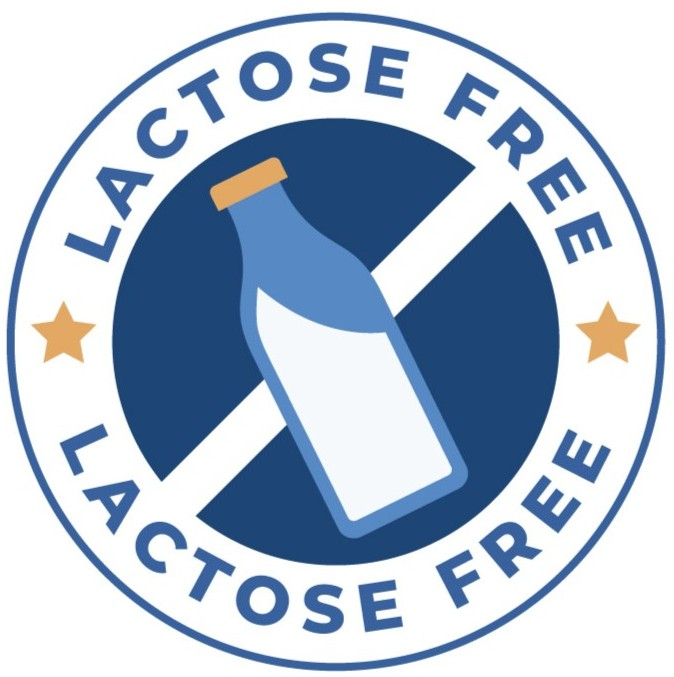

Objetivo: Mostrar cómo las bacterias fermentan la lactosa en ácido láctico y modifican el pH.
Selecciona el tipo de leche

Vaca

Cabra

Sin Lactosa
Sin Lactosa
Objetivo: Mostrar cómo las bacterias fermentan la lactosa en ácido láctico y modifican el pH.